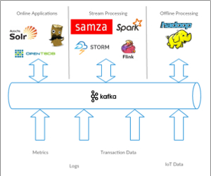
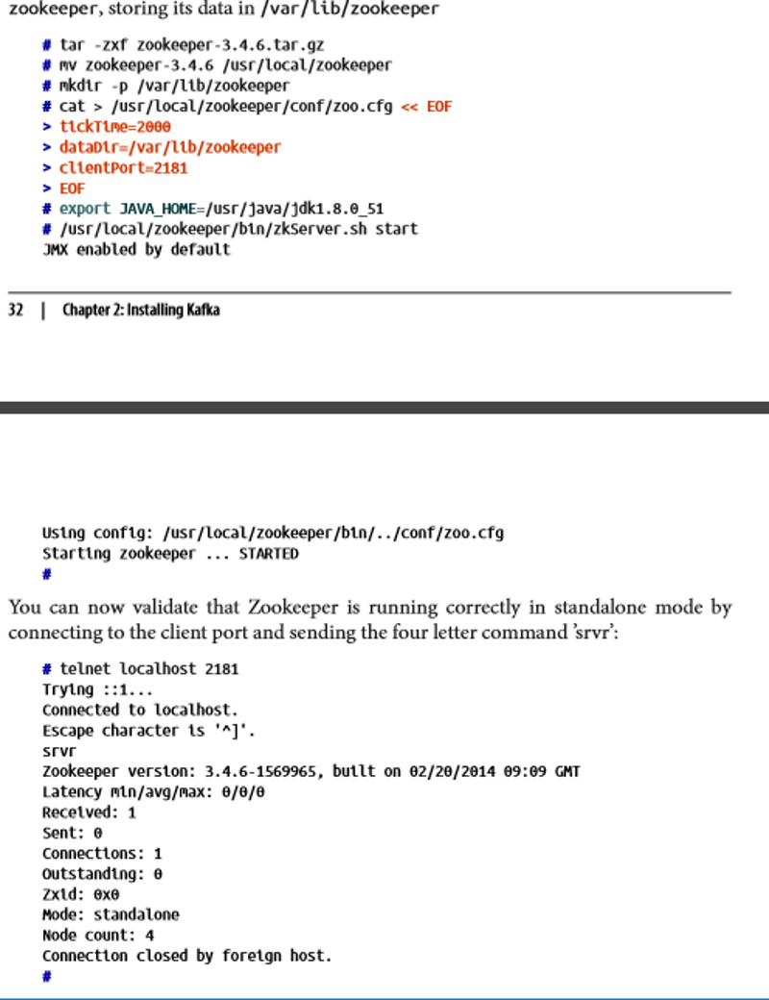
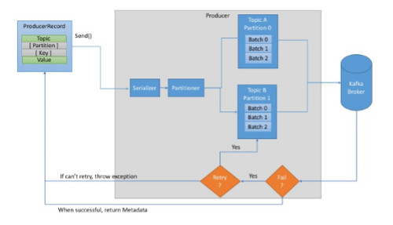
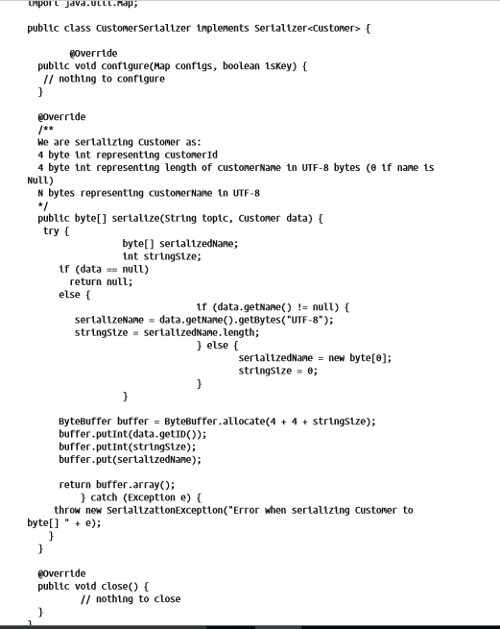
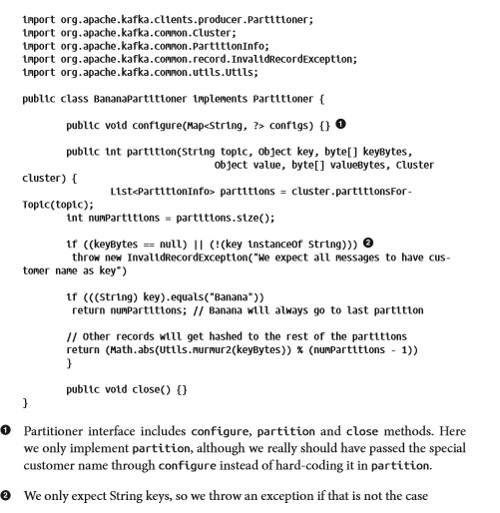
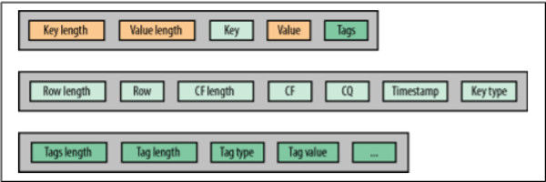

A large part of these notes are paraphrased from the following books and YouTube channels.
Create a data lake using Kafka, where users can produce or query for data sent to it. You need Java, Zookeeper, Kafka, and Avro serializers/schema registry. Kafka is written in Java, Zookeeper keeps metadata about Kafka brokers, and Avro serializers/schema registry will serialize messages and store the schema used at that time. If you have a strategy for partitioning the data you can customize the partition strategy, otherwise use the default settings. Kafka writes batches of messages to partitions stored on a topic. Messages are sent to Kafka brokers which can handle millions of messages a second, and work together as broker clusters. Broker clusers work in isolation and have one broker as their leader. To avoid running out of disk space, old data is often deleted. Each broker in a cluster is configured to know the ids of other brokers in their cluster.
A message has a "value" which is the message, and a "key" which is extra info about the message and also allows you to pick the partition. There are four required settings: the identifier to the brokers, the serializer used for the messages, the serializer used for the key, and the schema registry. The schema registry and serializers are all created for you with Apache Avro.
Do you need messages stored in a particular order? Do you need to guarentee no messages get lost? These are questions to ask yourself when determining the additional settings when writing messages, and there are usually trade offs. There are two primary ways to send messages, synchronously or asynchronously. Synchronous means after sending the message, a Future object will be returned soon, and it gives you a chance to call a get() method to verify that the message made it there successfully. Asynchronously means the broker will send back a packet after it receives each message, which might include an exception. An exception tells you that something went wrong and you have a chance to run code to account for the error. Having a schema registry means having a new schema is easy, so you can horizontally scale your topics.
You want to start with a lot of partitions on your topic, and scale by increasing the number of consumers in the consumer groups that read the data (optionally scale by increasing partitions). The five main properties of a KafkaConsumer to configure are bootstrap.servers, key.serializer, value.serializer, schema registry, and group.id for the consumer group. poll() pulls some messages as a packet (optionally one message), and when finished reading the packet a commit is sent to the leader. Kafka offers "at-least once delivery" if you need "exactly once delivery" you will need an external data store that has a transaction model.
Use replication factor of 3. Kafka is built reliable, but works faster when you make it less reliable. Set unclean.leader.election.enable to false if data quality and consistency is critical, it will wait until the leader comes back online.
Use Kafka Connect in most situations, otherwise use "producer and consumer". The former doesn't require that the user is a developer, but the latter does. Kafka is good at reading in and outputing different data formats. Some configurations usually depend on how important the following factors are: timeliness of dataflow, reliability, throughput, and security. Configure Kafka Connect with a Schema Registry and check if the cluster is up. The book has more details on Kafka Connect.
The observer pattern idea is important. The publisher creates a defined class of message, and subscribers subscribe to certain classes of messages. It seems like all the messages are sent/picked up in one server that stores/queries for the data when requested.
What you would like to have is a single centralized system that allows for publishing of generic types of data, and that will grow as your business grows. (Kafka the Definitive Guide)
Kafka is a publisher/subscribe messaging system. There are producers and consumers of messages. Use schemas to decouple the publishers and subscribers. The basic unit in Kafka is a message and it has no required data type or format (a message is like a row in a DB table). Kafka writes in batches. Messages are stored in the topics you tell it to go into and is usually automatically partitioned (a topic is like a DB table). There is an optional key to each message which is used to group some messages into the same partition. A consumer remembers the message offset, so if it has to stop and start, it doesn't lose its place. Consumers are placed in groups and consume a topic together, each reading different partitions. If one fails, the work is rebalanced to the other consumers in the group.
One broker can easily handle thousands of partitions and millions of messages per second. The broker's task is to
A broker is intended to work as a cluster of brokers. One broker will be the cluster controller, which assigns partitions to brokers and monitors for broker failures. Each partition has one leader broker, but is also replicated on other brokers.
This setting can be configured to delete old data after a certain age of the message (e.g. 7 days) or unit the topic reaches a size (i.g. 1 gigabyte). Data is stored on disk so it doesn't have to be used in real-time.
It can be beneficial to have multiple clusters. Reasons include:
Since they don't talk to each other, you may decide to keep multiple sites of data in one cluster. Also you might decide to duplicate data on multiple clusters for use. The tool Mirror Maker can consume multiple Kafka clusters, aggregate the data, and again consume the aggregated Kafka cluster to place it in another Kafka cluster.
Ecosystem of producting and consuming data.

Try to let data power everything that is done.
Kafka is an open source Java application and has become the first chioce for big data pipelines.
You need Apache Kafka for brokers and Apache Zookeeper for storing metadata for brokers. Download Java. Download Zookeeper with this link and here are some commands to install zookeeper.

Run Zookeeper with a 5-node ensemble, otherwise use 3-nodes, 7-nodes, or 1-node. Have a common configuration for each server that includes the list of all servers. Configurations are set up in terms of tickTime units, a tickTime of 2000 is 2 seconds. initLimit is the amount of time to allow followers to connect to the leader and syncLimit limits how far out of sync followers can be with the leader. The format for server configuration setting is server.X=hostname:peerPort:leaderPort
You need to download Apache Kafka. This example installs Kafka
tar -zaxf kafka_2.11-0.9.0.1.tgz
mv kafka_2.11-0.9.0.1 /usr/local/kafka
mkdir /tmp/kafka-logs
export JAVA_HOME /usr/java/jdk1.8.0_51
/usr/local/kafka/bin/kafka-server-start.sh -daemon
Then verify it is working with simple commands
/usr/local/kafka/bin/kafka-topics.sh --create --zookeeper localhost:2181
--replication-factor 1 --partitions 1 --topic test
/usr/local/kafka/bin/kafka-topics.sh --zookeeper localhost:2181
--describe --topic test
This will produce messages:
/usr/local/kafka/bin/kafka-console-producer.sh --broker-list
localhost:9092 --topic test
Test Message 1
Test Message 2
^D
This will consume messages:
/usr/local/kafka/bin/kafka-console-consumer.sh --zookeeper
localhost:2181 --topic test --from-beginning
Test Message 1
Test Message 2
^C
It may be required to change default configurations when running on a cluster of brokers.
Options set per topic
Disk storage, SSD, memory, and networking can be the most important factors. Lots of hardware can work, SSD is preferred, high disk capacity is good, and memory is very important. It is best if no other significant application is running because memory is important. Networking is a governing factor; the more consumers there are, the more this can become a bottleneck. CPU is often not a primary factory in selecting hardware for Kafka.
AWS has cheaper options that have high throughput or high storage, and also more expensive options that have both.
One Kafka broker for a proof of concept. Many brokers allows scaling the load and replication. Reasons for higher number of brokers includes how much data you're trying to store, and allowing more requests to be handled at once. All brokers must be mentioned in the Zookeeper configuration and the broker.id must be unique for each broker.
vm.swappiness should be set to 1. Servers with brokers should be separated so a power outage to one doesn't affect the others.
Is every message critical, or can we tolerate loss of messages? Is it okay to accidently delete messages? Throughput is how quickly we want the message to be writen to Kafka. You may choose to tolerate latencies up to a certain amount.

We start with a ProducerRecord with an optional key and partition. We serialize the objects to ByteArrays so they can be sent over the network. The partitioner chooses a partition if we didn't specify one. The broker may retry if it failed. If successful, it returns the topic, partition, and offset. The producer object has three mandatoiry properties to set.
Here is an example.
private Properties kafkaProps = new Properties();
kafkaProps.put("bootstrap.servers", "broker1:9092,broker2:9092");
kafkaProps.put("key.serializer","org.apache.kafka.common.serialization.StringSerializer");
kafkaProps.put("value.serializer","org.apache.kafka.common.serialization.StringSerializer");
producer = new KafkaProducer
A producer is created. There are three primary ways to send messages.
The simplest way to send a message is:
ProducerRecord
new ProducerRecord<>("CustomerCountry", "Precision Products","France");
try {
producer.send(record);
} catch (Exception e) {
e.printStackTrace();
}
producer takes a ProducerRecord. One parameter in this ProducerRecord constructor is the topic name.
The code previously was a synchronous send, but the Future object isn't used. To use the Future object, write code like this:
producer.send(record).get();
The good response to some errors is to resend the data (connect or no leader errors). Other errors must throw an exception like "message size too large" errors, because resending won't help.
private class DemoProducerCallback implements Callback {
@Override
public void onCompletion(RecordMetadata recordMetadata, Exception e) {
if (e != null) {
e.printStackTrace();
}
}
}
ProducerRecord
new ProducerRecord<>("CustomerCountry", "Biomedical Materials", "USA");
producer.send(record, new DemoProducerCallback());
Callback is from the org.apache.kafka.clients.producer.Callback interface. The code in the callback function will probably be more robust in production code.
Serialize means making it an array of bytes. when you need to serialize something other than Integers, Strings, or Bytes, you can use a library or create your own serializer. Some generic serialization liraries are Avro, Thrift, and Protobuf. Use these libraries, but it is also beneficial to have the knowledge of how a serializer works. As an example, imagine you have a customer class with a customerId and customerName. The serializer can be storing 4 byte int for customerId, 4 byte int for length of customerName in UTF-8 bytes (0 if name is null), N bytes representing customerName in UTF-8.
data.getName().getBytes("UTF-8"); // getName() returns a string.

Due to debugging and maintainance concerns, NEVER implement your own serializer. Use existing libraries like Apache Avro, Thrift, or Protobuf.
Avro is a language neutral data serialization format that usually uses JSON. There is a schema usually described in JSON and usually embedded in the files. The schema can change and you can continue to process messages without requiring any update or change. If the fields didn't exist in the schema at a point in time, the getter method will simply return null. The reader will need access to the schema(s) used; this is in the file itself, or Kafka offers a better way.
Schema Registry is required for Avro when working with Kafka. This stores the schema, so we will know the right schema for each record. The idea is to store all the schemas used to write data to Kafka in the registry. We simply store the identifer for the schema in the record we produce to Kafka. The key tells what schema to use in the Schema Registry.
The producer serializes the data and gives it to the Kafka broker, also passing in the key for the schema registry. The consumer deserializes the data and gets help from the schema registry, using the key to get the right schema. Here is an example of how to produce Avro objects to Kafka
Properties props = new Properties();
props.put("bootstrap.servers", "localhost:9092");
props.put("key.serializer", "io.confluent.kafka.serializers.KafkaAvroSerializer");
props.put("value.serializer", "io.confluent.kafka.serializers.KafkaAvroSerializer");
props.put("schema.registry.url", schemaUrl); // points to where the schemas are stored.
String topic = "customerContacts";
int wait 500;
Producer
while (true) {
Customer customer = CustomerGenerator.getNext();
System.out.println("Generated customer " + customer.toString());
ProducerRecord
producer.send(record);
Here is an example using generic Avro objects
Properties props = new Properties();
props.put("bootstrap.servers", "localhost:9092");
props.put("key.serializer", "io.confluent.kafka.serializers.KafkaAvroSerializer");
props.put("value.serializer", "io.confluent.kafka.serializers.KafkaAvroSerializer");
props.put("schema.registry.url", schemaUrl);
String schemaString = "{\"namespace\": \"customerManagement.avro\", // we need to begin to create the Avro schema
\"type\": \"record\", " +
"\"name\": \"Customer\"," +
"\"fields\": [" +
"{\"name\": \"id\", \"type\": \"int\"}," +
"{\"name\": \"name\", \"type\": \"String\"}," +
"{\"name\": \"email\", \"type\": \"null\",\"string\"], \"default\":\"null\" }" +
"]}";
Producer
Schema.Parser parser = new Schema.Parser();
Schema schema = parser.parse(schemaString);
for (int nCustomers = 0; nCustomers < customers; nCustomers++) {
String name = "exampleCustomer" + nCustomers;
String email = "example " + nCustomers + "@example.com"
GenericRecord customer = new GenericData.Record(schema); // note: this is a generic record
customer.put("id", nCustomer);
customer.put("name", name);
customer.put("email", email);
ProducerRecord
new ProducerRecord
producer.send(data);
}
}
Keys are additional information, and also determine the partition. This example uses a key.
ProducerRecord
new ProducerRecord<>("CustomerCountry", "Laboratory Equipment", "USA");
This example doesn't use the key (automatically set to null).
ProducerRecord
new ProducerRecord<>("CustomerCountry", "USA");
If you increase the number of partitions in the topic later on, the same key previously used will probably go to a new partition. Default partitioner is the most common. Sometimes you might want one large account to get its own partition and other accounts to be hashed into the other partitions. Not sure why you want one partition to have a lot of data, except for keeping the other partitions small.

Apache Kafka documentation is available. Most optional producer configurations don't need to be changed, but some have significant impact on memory, performance, and reliability.
One use case is reading messages in a Kafka topic, running validations, and writing the results somewhere else. You have consumers in consumer groups subscribe to topics. A partition can only be read by one consumer at a time, so having too few partitions can become a bottleneck. You want lots of partitions and consumers. Two consumer groups can read the same topic at the same time, and Kafka scales well with many consumers/consumer groups. Some reasons partitions may be reassigned include if new partitions are created, new consumers are added, or a consumer errors out. Consumers poll for messages and sends out a heartbeat, if no heartbeat is heard for long enough, the consumer is assumed dead. You create a KafkaConsumer similar to a producer, with the five main properties, bootstrap.servers, key.serializer, value.serializer, schema registry, and group.id for the consumer group. Next you can subscribe to a topic with code like this:
consumer.subscribe(Collections.singletonList("customerCountries"));
// subscribe to topics with this code:
consumer.subscribe("test.*");
Consumers keep calling poll() to show that they still have a heartbeat. Poll() gives them ConsumerRecords. Consumers should be closed when done. One consumer per thread. When a consumer is done with records from a poll() it commits that it is done. There are safe ways of processing records only once, this would involve committing after every message and simultaneously processing and committing at the same time. Kafka offers "at-least once delivery" if you need "exactly once delivery" you will need an external data store that has a transaction model. Another concern is closing the consumer when done.
Every producer/consumer of Kafka must think about reliable data delivery; systems that integrate with Kafka are as important to consider as Kafka itself. Reliability is built into Kafka. You must throughly test that the system is reliable. Kafka has configurations for high throughput, low latency, and low hardware costs, but with the tradeoff of being less reliable. Replication factor of 3 is recommended (Data is stored three times total). Each replication is in a different broker, but you can be safer by considering rack level misfortune. Use broker.rack configuration and Kafka will try to replicate more across different racks. If a leader is no longer available, election for a new leader is done without loss of data. Set unclean.leader.election.enable to false if data quality and consistency is critical, it will wait until the leader comes back online when replicas of the leader are out of sync (they can't replace the leader without loss of data).
Kafka acts as an interface between producers and consumers. There are generally two types of pipelines:
Generally the most important considerations when making a pipeline are:
You should either use "producer and consumer" or Kafka Connect. "producer and consumer" is used by developers as seen earlier. Kafka Connect can be used by non-developers, it pulls data in from a source and it pushes data out to a source. Kafka Connect is recommended and comes with Kafka.
It is recommended to run Kafka Connect on separate servers from Kafka brokers. start script:
bin/connect-distributed.sh config/connect-distributed.properties
Configurations include bootstrap.servers - brokers Connect will work with (Try to list at least three brokers in the cluster), group.id - all workers with the same group id are part of the same Connect cluster, key.converter and value.converter (set the converter that will be stored in Kafka) can be set as AvroConverter for Schema Registry and are JSON by default. To use a schema you need to configure the schema registry location with key.converter.schema.registry.url and value.converter.schema.registry.url. To check if workers and the cluster are up, use this command:
gwen$ curl http://localhost:8083
To check what connector plugins are available:
gwen$ curl http://localhost:8083/connector-plugins
The book explains in more depth how to use Kafka Connect.
HBase is a key value store.
HBase "is the Hadoop database, a distributed, scalable, big data store".
HBase requires Zookeeper to monitor the health of its servers and a filesystem like HDFS or Amazon S3.
Features of HBase
Some limitations are
HBase is column oriented (RDBMS are row oriented), which allows quick deployment and iteration on datasets. To create a table, specify only the table name and column families.
HBase has two types of tables, systems tables which hold meta information (never need to worry about these), and user tables. User tables are stored in namespaces. A row is found because the key is the same for all values in the column families. A cell is a column and a key. You're allowed to have multiple versions of a cell, which includes a timestamp.
It is possible to have millions of columns with dynamically created names, where columns names are different between all the rows.
I think of databases as a collection of rows, and HBase as a collection of cells, making it more flexible. A table is made up of region(s), and a region is made up of column families, and a column family is made up of a store, and a store has HFiles and one Memstore.
Regions are used for scalability; it allows HBase to distribute data over multiple servers. The loadbalancer helps move the load evenly in the cluster. Separate frequently changing information from rarely changed information into different column families. You can group similar format information into the same column family. Almost always use one column family, otherwise use two column families (most cases cap it at 2). For example, all text information could be stored in column family one, and images in column family two. HFiles are created when memstores are full and must be flushed to disk, and these are compacted over time. HFiles are stored in HDFS, so they can benefit from Hadoop persistence and replication. Keep the default block size, blocks are inside HFiles and are 64 KB by default. The same column can be stored in different files in HDFS. This is an HBase cell (Tags are optional):

It is recommended to turn off automatic major compaction and to run it yourself using a cron job to avoid peak hours. Spread the compactions over the whole week, not during one day. Set it so you only compact files if the number of files exceeds X or if the age of the files are too old. A split is the opposite of a compaction and could cause problems and is something to keep in mind. Every five minutes HBase Master will run a load balancer to ensure that all RegionServers are managing and serving a similar number of regions.
Master: HMaster, NameNode, and ZooKeeper
Worker: RegionServer and DataNode
There is one active master on a single cluster. A master is responsible for region assignment, load balancing, RegionServer recovery, region split completion monitoring, and tracking active and dead servers. A RegionServer is the application hosting and serving the HBase regions. You should run this at most once on a computer.
There is a REST server API. Used with HTTP calls like curl. Formats are:
We can create a simple table like this:
create 't1', 'f1'
put 't1', 'r1', 'f1:c1', 'val1'
We can request XML now:
curl -H "Accept: text/xml" http://localhost:8080/t1/r1/f1:c1
That command might return dmFsMQ==. The results are base64 encoded and can be decoded with:
$ echo "dmFsMQ==" | base64 -d.
val1
If you don't want to decode the base64 values, you can use this:
curl -H "Accept: application/octet-stream" http://localhost:8080/t1/r1/f1:c1
Use Cloudera Manager or Apache Ambari to deploy, monitor, and manage the full Hadoop suite. Monitoring is extremely important with distributed systems without support help. Cloudera Manager (CM) makes it trivial to set up a Hadoop cluster. There are impressive charts and graphs built into CM, and you can also run SQL-like language called Tsquery to make custom graphs, charts, and dashboards. Distributed log search is a useful CM tool that will look at numerous nodes and return logs. SQL on Hadoop plays an important role in Big Data and modern Business Intelligence. SQL on Hadoop choices: Apache Pheonix, Apache Trafodion, Splice Machine, Kylin, Themis, Tephra, Hive, and Impala. Impala and Hive have slow queries. Pheonix leverages HBase coprocessors, range scans, custom filters, and secondary indexes. Pheonix has an index for you whether you have a read heavy or write heavy workload.
Hannibal is for visualization of internals of HBase such as information about regions; Hannibal is no longer developed and works for HBase 0.98 and earlier.
One framework is OpenTSDB which handles time series data with a cool UI out of the box. Kite is a framework to optimize storage and performance efficiency. Kite offers an easy way to load data into a cluster. It can save code writing for writing data into Hadoop. HappyBase makes HBase work for Python. AsyncHBase is the last framework which gives better throughput and performance if your data can be processed asynchronously (asynchronous means a process runs after something else flags that it is completed). I don't quite understand other aspects, and it handles time series data like OpenTSDB.
Consider how much strain and how much memory you will need when deciding cluster size and hardware. Get lots of cheap computers. Get 25 to 50 GB of memory per node (8-16 for OS, 2-4 for DataNode, 12-24 for HBase, rest for YARN) Having 256 GB or more RAM is good for read heavy needs. Mid-range speed and low core count. Don't use SSD storage, it is too expensive. I think it recommends getting low end dual dodeca core (dual 12 core) processors. Need 1 to 10 Gigabit Ethernet for networking. Must set OS Kernal swappiness to 0 or 1 depending on OS (to turn it off; ore partition size to 0 could turn it off). Newer versions of Hadoop require YARN. There are settings you must use or consider. Tune HBase based on which you think are most important: reads, writes, or mixed. Use the hardware available at the time, use Ethernet for networking, use basic math for a guess, and then do tests and tuning to get started. Afterwards, Hadoop and HBase scale linearly, so it becomes more predictable what is required once you get started.
The easiest way to get started with HBase is to use VirtualBox for a virtual machine and the Cloudera-quickstart-vm. You first check if HBase is running with the commands "hbase shell" and "status". It should appear working, if not it has started to work after shutting down and restarting the VM. To use the code examples in the book, install Intellij (README included in the Intellij download). Be sure to install the Scala plugin as it starts up. Then download the GitHub page to a folder with the command "git clone https:..." where this url is given on GitHub. Then go to Help > Import Projects and import the folder as a Maven project. The pom.xml comes with the project and handles dependencies. You may need to add it as a Maven project, which is done by the "Maven Projects" button on the right edge of Intellij (add the pom.xml).
Go to the Cloudera Manager site (bookmarked on the Cloudera Quickstart VM). Login with username cloudera and password cloudera. Start up or restart Zookeeper, HDFS, and HBase. Visit the HBase tab and go to Actions (top right corner) > Download config files. Send them to your computer out of the VM. The configuration files point to the VM, so you can program locally and use the VM for the HBase server.
Applications are often drastically different from one another, but here is one example. The end senario is having an application able to query from Impala, HBase, and Solr all which are within HDFS. HDFS is the primary storage system for Hadoop applications. Impala is for SQL and aggregations, HBase is for viewing the raw records, and Solr is useful for allowing the user to use English to find information from the data. Impala and Solr and built using the HBase data. Data is fed into HBase from Avro Schemas. Before that, an ETL job moves data from HDFS to Avro. Data originally got into HDFS by loading in XML and flat files using the HDFS API.
Impala allows the user to look at key performance indicators (KPIs). The user can select the KPIs they want split out in different ways. The application should have a date range, filter choices, facet choices, and options for scheduling the KPI or adding it to a dashboard. The default facet should be a time series, with other charts available.
This command might help install ElasticSearch
brew info elasticsearch
You can start one or many ElasticSearch instances, so they will work as a cluster with the first command below. Start ElasticSearch, Kibana, and open Kibana with these three commands:
./elasticsearch
./bin/kibana while in kibana folder
put this in the browser http://localhost:5601/app/sense
ElasticSearch is text analysis beyond just sentiment analysis.
All of these notes and topics are covered in greater detail in the documentation.
Like most persistant storage technologies, the primary commands are CRUD (Create, Read, Update, and Delete). Other commands are bulk create and multi-search. When reading from ElasticSearch, all replicas are equally able to service your request. Commands that create, update, or delete will have to go through the primary shard first and make the change, then the changes are propogated to replicas as a single transaction. Updates won't occur until enough of the shards are ready for the replication. To avoid data integrity issues from two updates interfering with each other, the version is checked to make sure the version hasn't changed.
curl -XPOST 'http://localhost:9200/_bulk?pretty' --data-binary @./example_bulk.json
Bulk uploads are parsed by new lines. The master node will group the requests to each shard together and send them to the primary shards. A multi-get will be sent to any replica or primary shard once requests are grouped by shard; the main idea for these is to spread the work to nodes in a round-robin type of way (equal share of work in turn).
Auto generation of _id is good. Sometimes you want your own _ids, for instance if you want to keep track of what makes a document unique.
The most basic search is:
GET /_search
You can specify a maximum time before returning the results gathered so far; if speed is important. This doesn’t abort long running queries
GET /_search/timeout=10msTwo searches, the URL one and the JSON DSL. The query-string parameters searched for are optional and results are sorted by relevance. Using a + or - prefix makes a query-string parameter required or not allowed. There is a way to see how each field is treated, to see if it is a String, date, long, etc.
Rules:
Some fields are indexed as full text, others are different data types. This affects matching in queries.
Inverted index: very fast searched by listing unique words
We probably want to treat synonyms, plural/singular/same root word, and capitalization differences as the same word.
So we index it as if Quick is quick, foxes is fox, and jumped/leaped are indexed as jump.
We call this normalization. We must apply the same rules to the search parameters for this to work.
This is called analysis
Analysis
1) clean up text 2) tokenize them by whitespace or punctuation 3) clean up the tokens with token filters which change the tokens (i.e. Quick to quick).
This is built in and customizable.
Maybe spell-check will want to be used for #3 too.
Analyzers
Language Analyzers look really good. They remove common words like “the”, keeps the root of words, and uses lowercase. Here is a list of languages we can have this work for.
When you query a full-text field, the query will apply the same analyzer to the query string to produce the correct list of terms to search for.
When you query an exact-value field, the query will not analyze the query string, but instead search for the exact value that you have specified.
Testing Analyzers
Use the _analyze API to learn how the text is tokenized and stored.
The standard analyzer is used by default for Strings, and they will be searched with full-text. Sometimes you want a string to be exact match.
For fields other than string fields, you will seldom need to map anything other thantype:
Fields of type string are, by default, considered to contain full text. That is, their value will be passed through an analyzer before being indexed, and a full-text query on the field will pass the query string through an analyzer before searching.
The two most important mapping attributes for string fields are index and analyzer.
You can specify the mapping for a type when you first create an index. Alternatively, you can add the mapping for a new type (or update the mapping for an existing type) later, using the /_mapping endpoint.
View the mapping with
GET gb/_mapping/tweet (where gb is index and tweet is type)
Anything but String, you just need to specify the type in most cases
Strings have type, index, and analyzer;
type is string
index is analyzed, not_analyzed, or no (analyzed by default)
analyzer is the type of analyzer (For analyzed chosen as index)
Can’t go from analyzed to not analyzed without dropping the index
The goal of filtering is to reduce the number of documents that have to be examined by the scoring queries.
Filter is yes/no keep or remove. Scoring takes longer to run; scoring is related to how many matches, how close the words are together, uses analysis to map similar words as the same word.
Query clauses are for full text searches and filters are used for everything else
Some important words
bool; must, must_not, should, filter.
Important things to configure:
shards, replicas, analyzer in that order
All of these notes and topics are covered in greater detail in the documentation.
Elasticsearch: The Definitive Guide
Intuition
Some commands are: Create, Search, Update, Delete, multi-search, bulk create/update/delete
Searches don’t have to be done by the primary shard. Other commands are sent to the primary shard and then sent to replicas. To avoid threading type errors, the update statements will check the version, and when updating it will make sure this version hasn’t changed; if it has it will retry a certain number of times. Updates are processed when enough of that shard are free on enough nodes, it will wait by default 1 minute to see if that shard is free on enough nodes before failing.
Curl to do a bulk upload
curl -XPOST 'http://localhost:9200/_bulk?pretty' --data-binary @./example_bulk.json
Bulk uploads are parsed by new lines. The master node will group the requests to each shard together and send them to the primary shards. A multi-get will be sent to any replica or primary shard once requests are grouped by shard; the main idea for these is to spread the work to nodes in a round-robin type of way (equal share of work in turn).
Auto generation of _id is good. Sometimes you want your own _ids, for instance if you want to keep track of what makes a document unique.
Searches
The most basic search
GET /_search
You can specify a maximum time before returning the results gathered so far; if speed is important. This doesn’t abort long running queries
GET /_search/timeout=10ms
Simple Searches
Two searches, the URL one and the JSON DSL. The query-string parameters searched for are optional and results are sorted by relevance. Using a + or - prefix makes a query-string parameter required or not allowed. There is a way to see how each field is treated, to see if it is a String, date, long, etc.
Rules:
1) use _search?q=
2) use field:value if you want to search a field. If this isn’t a string it might use exact value search.
3) use value if you want to search _all text. _all is always a string and use full-text search.
4) use +field:value OR +value to require something
5) use -field:value OR -value to exclude something
6) the query-string can use + to replace space. The symbols +,-, :, and > are replaced with %2B, %2D, %3A, and %3E
7) Use parentheses and a space to specify “OR” for the value. (i.e. (aggregation+geo))
8) Greater than a date is date:>2015-05-05, using the > symbol; don’t replace the dashes with %2D here.
9) It is not advised to use the query-string parameters in production to users
Mapping and Analysis
Exact values vs full text
Some fields are indexed as full text, others are different data types. This affects matching in queries.
Inverted index: very fast searched by listing unique words
We probably want to treat synonyms, plural/singular/same root word, and capitalization differences as the same word.
So we index it as if Quick is quick, foxes is fox, and jumped/leaped are indexed as jump.
We call this normalization. We must apply the same rules to the search parameters for this to work.
This is called analysis
Analysis
1) clean up text 2) tokenize them by whitespace or punctuation 3) clean up the tokens with token filters which change the tokens (i.e. Quick to quick).
This is built in and customizable.
Maybe spell-check will want to be used for #3 too.
Analyzers
Language Analyzers look really good. They remove common words like “the”, keeps the root of words, and uses lowercase. Here is a list of languages we can have this work for.
When you query a full-text field, the query will apply the same analyzer to the query string to produce the correct list of terms to search for.
When you query an exact-value field, the query will not analyze the query string, but instead search for the exact value that you have specified.
Testing Analyzers
Use the _analyze API to learn how the text is tokenized and stored.
The standard analyzer is used by default for Strings, and they will be searched with full-text. Sometimes you want a string to be exact match.
For fields other than string fields, you will seldom need to map anything other thantype:
Fields of type string are, by default, considered to contain full text. That is, their value will be passed through an analyzer before being indexed, and a full-text query on the field will pass the query string through an analyzer before searching.
The two most important mapping attributes for string fields are index and analyzer.
You can specify the mapping for a type when you first create an index. Alternatively, you can add the mapping for a new type (or update the mapping for an existing type) later, using the /_mapping endpoint.
View the mapping with
GET gb/_mapping/tweet (where gb is index and tweet is type)
Anything but String, you just need to specify the type in most cases
Strings have type, index, and analyzer;
type is string
index is analyzed, not_analyzed, or no (analyzed by default)
analyzer is the type of analyzer (For analyzed chosen as index)
Can’t go from analyzed to not analyzed without dropping the index
The goal of filtering is to reduce the number of documents that have to be examined by the scoring queries.
Filter is yes/no keep or remove. Scoring takes longer to run; scoring is related to how many matches, how close the words are together, uses analysis to map similar words as the same word.
Query clauses are for full text searches and filters are used for everything else
Some important words
bool; must, must_not, should, filter.
Important things to configure:
shards, replicas, analyzer in that order
Do a bulk with this
curl -XPOST http://127.0.0.1:9200/myindexname/type/_bulk?pretty=true --data-binary @myjsonfile.json
Format data with search/replace OR see the comment about JQ here http://stackoverflow.com/questions/20646836/is-there-any-way-to-import-a-json-filecontains-100-documents-in-elasticsearch
Use this code to do a bulk upload
curl -XPOST http://127.0.0.1:9200/myindexname/type/_bulk?pretty=true --data-binary @myjsonfile.json
Use this Java code to format CSV to ElasticSearch
package ElasticSearch.ElasticSearch;
import java.io.BufferedReader;
import java.io.BufferedWriter;
import java.io.File;
import java.io.FileNotFoundException;
import java.io.FileReader;
import java.io.FileWriter;
import java.io.IOException;
import java.io.PrintWriter;
import org.apache.commons.lang3.StringUtils;
public class App {
public static void main(String[] args) {
File inputFile = new File("/Users/peterjmyers/Documents/No_Backup_Needed/elasticsearch-2.4.1/Projects/Media Partners/media_partners.csv");
File outputFile = new File("/Users/peterjmyers/Documents/No_Backup_Needed/elasticsearch-2.4.1/Projects/Media Partners/media_partners_output.json");
String[] headerArray = new String[30];
try {
PrintWriter setOutput = new PrintWriter(new BufferedWriter(new FileWriter(outputFile)));
BufferedReader getInput = new BufferedReader(
new FileReader(inputFile));
String header = getInput.readLine();
headerArray = header.split(",");
for (String element : headerArray) {
System.out.println(element);
}
String line = getInput.readLine();
String wholeLine = ""; // this is the whole line, which might span different lines in the document
String[] columnValues;
int commasOnLine = 0;
// int j=0;
while(line != null){
while (true) { // this loop is meant to build the whole line
wholeLine = wholeLine + line; // build the whole line
commasOnLine += StringUtils.countMatches(line,","); // check commas so far
if (commasOnLine < headerArray.length - 1) { // if more commas need to be found
line = getInput.readLine();
} else { // else we're done with the line
break;
}
}
columnValues = wholeLine.split(",");
// Update output
setOutput.println("{ \"create\": { \"_index\": \"ir\", \"_type\": \"media_partners\" }}");
setOutput.print("{");
for (int i=0; i
// Update output
setOutput.print(", ");
}
// Update output
setOutput.print("\"" + headerArray[i] + "\": ");
setOutput.print("\"" + columnValues[i] + "\"");
//System.out.println("i = " + i);
}
// Update output
setOutput.println("}");
line = getInput.readLine();
//System.out.println(j++);
commasOnLine = 0; // reset the comma count for the next iteration
wholeLine = ""; // reset the whole line for the next iteration
}
} catch (FileNotFoundException e) {
System.out.println("File was not found");
e.printStackTrace();
} catch (IOException e) {
System.out.println("An I/O Error Occurred");
e.printStackTrace();
}
System.out.println("done");
}
}
GET /_analyze
{
"analyzer": "english",
"text": "All these are the beginning of sorrows."
}
#Check all mappings
GET /_mapping
GET /bible/_search
{
"size": 0,
"aggs": {
"popular_words": {
"terms": {
"field": "verse"
}
}
}
}